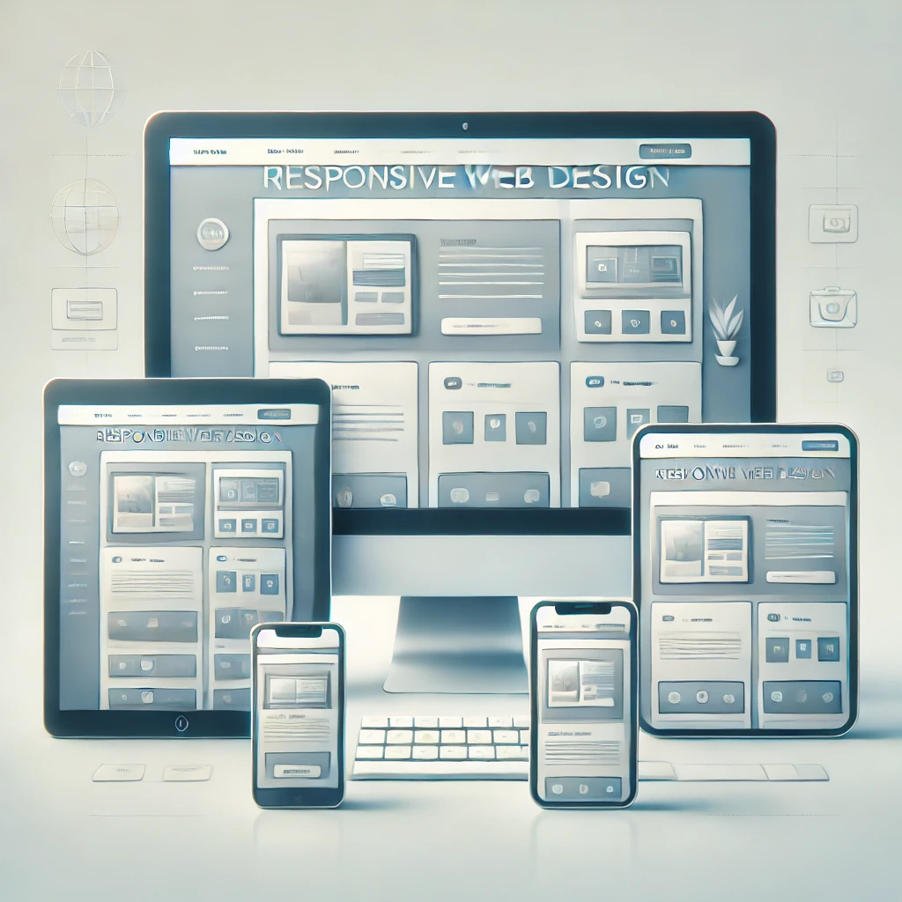
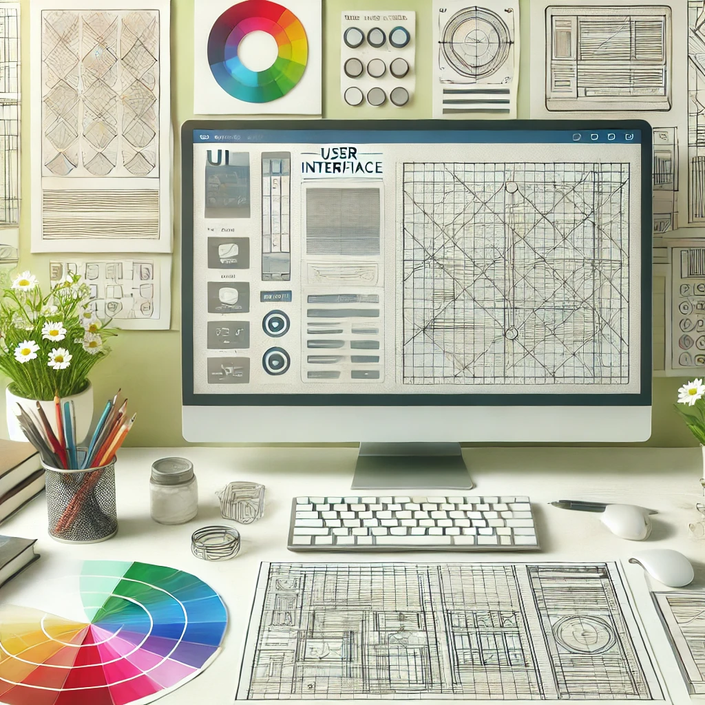
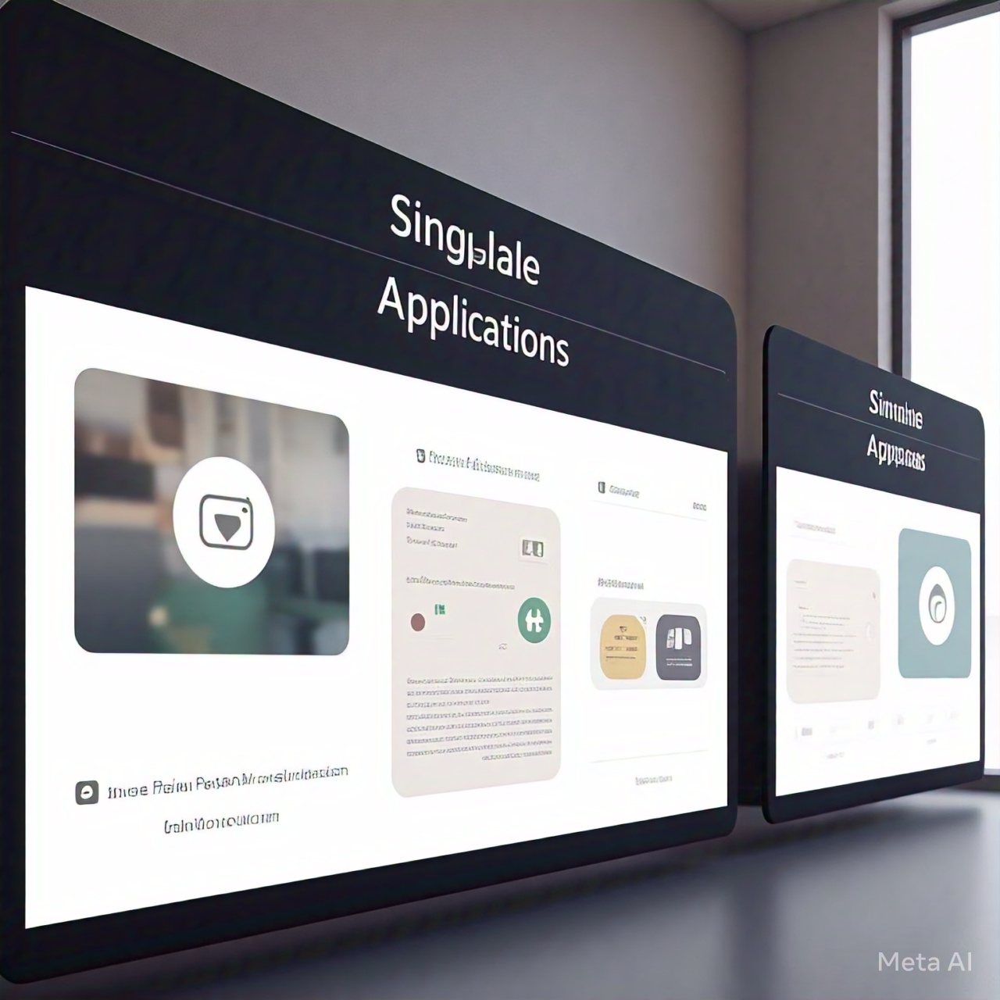
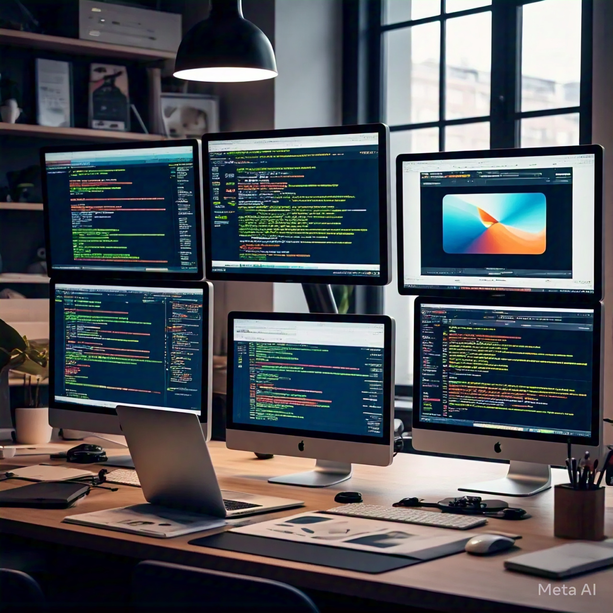

In today’s mobile-first world, responsive design is crucial. I specialize in crafting websites that automatically adjust to any screen size, providing an optimal viewing experience on desktops, tablets, and smartphones. By leveraging flexible grids, layouts, and media queries, I ensure your site looks flawless on any device.

A visually appealing and user-friendly interface is the cornerstone of an exceptional web experience. I design clean, modern, and intuitive interfaces that not only align with your brand identity but also prioritize usability, ensuring users can navigate your site effortlessly.
A slow website can drive users away. I optimize your website’s performance by minimizing load times, optimizing assets, implementing lazy loading, and leveraging best practices like caching and Content Delivery Networks (CDNs). The result? A faster, more engaging experience for your users.
Your business is unique, and your website should reflect that. I offer custom website development services tailored to your specific goals, industry, and audience. From e-commerce platforms to corporate websites, I build solutions that stand out and drive results.

SPAs provide a faster, app-like experience by dynamically loading content without requiring full page reloads. I develop robust and interactive SPAs using frameworks like React.js and Vue.js, offering seamless navigation and a highly responsive user experience.

Different browsers can render websites differently. I test and fine-tune your website to ensure it delivers consistent functionality and appearance across all major browsers, including Chrome, Safari, Firefox, and Edge. Your users deserve the same seamless experience, no matter their choice of browser.
An inclusive website is a necessity, not a luxury. I ensure your website meets Web Content Accessibility Guidelines (WCAG), making it usable for people with disabilities. Features like proper ARIA labels, keyboard navigation, and screen reader compatibility ensure your site is accessible to all.
Dynamic and interactive animations can captivate users and enhance their engagement. I use CSS, JavaScript, and libraries like GSAP to create smooth transitions, hover effects, scroll-based animations, and interactive elements that elevate your site’s visual appeal.
A website needs regular updates to stay secure and functional. I offer maintenance services to ensure your site remains bug-free, optimized, and up-to-date with the latest technologies. Whether it’s fixing errors, adding new features, or keeping your CMS updated, I’ve got you covered.
First impressions matter. I design high-converting landing pages optimized for marketing campaigns, product launches, and promotions. By focusing on compelling visuals, persuasive content, and clear calls-to-action (CTAs), I help you achieve your business goals.